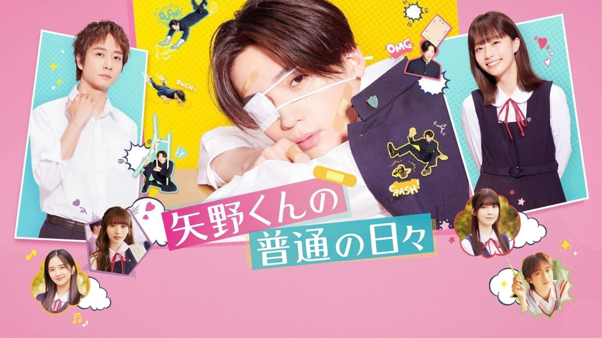

Yano-kun no Futsuu no Hibi (2024)
矢野くんの普通の日々

Yoshida seorang perwakilan kelas yang rajin, tidak bisa menahan rasa khawatirnya terhadap Yano teman sekelasnya. Hari demi hari Yano datang ke sekolah dengan kondisi terluka membuat Yoshida khawatir mengenai kondisinya.
Bertekad untuk mengungkap misteri tersebut, Yoshida dan teman-temannya memutuskan untuk menyelidiki situasi Yano lebih dekat dan menyadari bahwa dia adalah seseorang yang sangat tidak beruntung. Terlebih lagi, ia tidak dapat menjalani kehidupan sekolah normal karena kesialannya. Tergerak oleh penderitaan Yano, Yoshida bertekad untuk memberikan dukungan penuh kepadanya.
Saat ia menghabiskan lebih banyak waktu bersama Yano, ia semakin tertarik pada sifatnya yang murni dan jujur, tetapi jarak di antara mereka tampaknya tidak terlalu dekat. Yano yang tersentuh oleh kebaikan Yoshida, mulai mengembangkan perasaan terhadapnya.